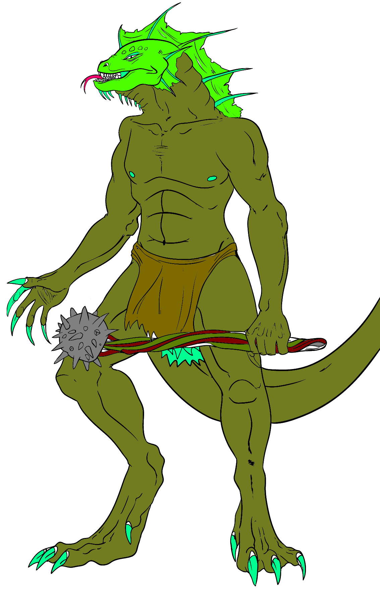

"So, why exactly are we cutting out their livers?" Aury asks conversationally. The beefy cleric has his head on a swivel, mace in hand and shield strapped to his left forearm as he keeps a vigilant lookout for further threats. And the truth is, he'd rather have to fight again than have to put his hands in frogling entrails.
Mattie finishes carefully placing another frogling internal organ in one of a pair of plast bags hanging by strings from a low-hanging cypress branch. "The livers are for Chudwick, Cimmer the Glassblower's boy — he has viddimen deficiency." The mage returns to the corpse of the same frogling and begins work on extracting its heart. "The hearts are for the goblins, proof of our effectiveness — but also good eating, or so I'm told."
The cleric grunts. "I'll take your word for it." While continuing to scan the shadows of nearby trees and other flora, he reaches down and peels another leech off his leg, just above a knee. "I don't get it. The water only comes up near the tops of our boots, but I keep finding leeches higher and higher on my legs."
Mattie stands and deposits a frogling heart in a plast bag that dangles next to the fuller, heavier, bag for livers. "They're making their way toward your groin. It's their preferred dining location." He stoops over and cleanses his hands and forearms with bog water.
"Makes sense," muses the cleric. "That is where my single largest vein is located..." Mattie looks up sharply, but the cleric is dead-panning, ostensibly focused only on the hazards of the surroundings.
"Well!" rejoins the mage, sealing the two plast bags. "You go ahead and luxuriate in that mistaken notion. Meanwhile, I have finished my collecting. I think these should suffice to convince our unfriendly lizardmen not to do anything untoward, at least not in the next few weeks." He hefts the bags, grimacing with a pained grunt as the weight aggravates a cut on his right arm. "Shall we head for home?"
Aury turns as he hears his friend grunt in pain. "You know, I'm hurt, too, actually. One moment..." The cleric lowers his head and closes his eyes briefly, whispering words too soft to hear.
Aghh... sighs Matthias in relief, having not noticed the impact on his right hip until his comerade's Healing Surge rights the injury with an audible click of a socket realigning. And so the two Seekers begin slogging their way — sloshing step by mud-sucking step — back east toward Helix village.
But of course, things can't be that simple, right? We can't just spend the morning in the bog collecting some froglings organs. No. No, a pair of lizardmen, who just might have been on their way to confer with their erstwhile frogling allies, have spotted you. And clearly, these lizardmen have seen the cut-open bodies of those small, no-longer-jumping amphibious ne'er-do-wells. They draw up just long enough to cast spears at about thirty feet distance, and are already charging forward even before those projectiles find or miss their marks.
For this fight, we'll eschew mapping. It'll be a tough fight, as these lizardman cannot yet be targeted by our cleric hero's Fray Dice. As combat erupts, Mattie is at 10/10 HP, and Aury is at 11/13 HP.
Lizardmen are 2+4 HD creatures.

"So..." Aury says, minutes later after you have looted the dead and resumed your trek east, slowly making progress back toward Helix village, "that was not entirely expected."
"It was not," Mattie agrees, glancing over at the cleric. The mage grins as Aury detaches yet another leech. "I hadn't counted on that much organized resistance, based on what Chief Scarface had shared. I think we were just victims of an unfortunate coincidence."
Aury turns, brow crinkling. "What, you don't think they were heading for the goblin camp? I don't know, that was a fairly sizeable group..."
"It was, but I don't think they were launching their attack on the goblins. For one thing, there weren't enough lizardmen. Whenever they decide to make their move, I'm guessing there will be at least a couple dozen lizardmen. No, I suspect that what we encountered was a patrol, perhaps doubling as a hunting party."
"All right, I'm still with you, so far," says Aury.
"Remember, froglings and lizardmen are naturally enemies, competing for resources. So, I think they were intentionally working together to build a certain degree of trust and familiarity with each other's methods — probably at the behest of their respective leaders."
The cleric nods. "Okay, makes sense. Well, I'm glad we didn't encounter them in force, if what we ran into was just a patrol."
Our two heroes had, briefly, considered harvesting more frogling livers, but Aury hadn't wanted to push their luck, and Mattie had been inclined to agree. Their backpacks jingle intermittently as the two progress eastward, evidence of coinage collected as treasure. By the time that the sun reaches its zenith, our heroes are perhaps another hour from the goblin camp.
"I've been wondering..." hazards the mage.
"Yes?" Aury disentangles a booted foot from where it has snagged in a root.
"When you did that ... healing thing..."
"The healing surge."
"Yes, that. Why did you speak under your breath? Other clerics in our chapterhouse — and for that matter, more broadly around Stigrix — loudly proclaim when they pray. I assume you were praying?"
"You assume correctly," Aury answers. Then he sighs, comes to a stop in the bog, hands on hips and staring off into the distance. "The reason is this. I believe that those other clerics... whoever or whatever they're praying to cannot hear them and grant spells unless they speak aloud."
"Yesss... but they do that to proclaim their faith boldly, to—"
"—to conspicously consume the blessing of diety," Aury finishes, shaking his head dismissively. "It serves as an explanation, I suppose. But I have never seen any other cleric invoke whatever ... Power it is that is listening without an audible request."
Matthias nods as the two Seekers again begin walking east. "So you've been experimenting, and you have discovered a god who can hear you even when you are silent..."
"Not a god," Aury rejoins. "The God. If I'm right, and I feel strongly that I am, there is only one god. One all-knowing being, all powerful. Those other clerics—"
"Aren't gods?" Matthias exclaims incredulously. "Well, I can't wait to see how your fellow clerics react to that!"
The two are silent for a full minute as they slog along. Finally, the mage says, "So you're ... testing this being."
"Not testing, no," Aury answers. "Displaying my faith. Resting in it..." And that is the end of that conversation, at least for the time being. Matthias shakes his head a minute later, still pondering it.